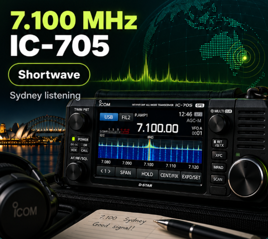

Radio
Shortwave still matters.
It is old-school radio with a modern purpose: part hobby, part curiosity and part backup plan. From Sydney, a simple receiver and antenna can bring in broadcasters, amateur stations, utility signals and voices from thousands of kilometres away.
And when the internet is overloaded, mobile coverage disappears or local power and communications are disrupted, radio can still be useful because receiving a signal does not depend on an app, subscription or nearby phone tower. It is not magic and conditions matter — but that independence is exactly why radio has never completely gone away.

Sydney Shortwave Live
A live listening dashboard built around Sydney conditions. It helps answer the practical questions: what bands are worth trying now, where signals may be coming from, what time it is in key listening regions and what propagation paths may be open.
Open Sydney Shortwave Live →Icom IC-705
The IC-705 is the heart of the listening setup. Small, portable and surprisingly capable, it covers shortwave and much more, with a spectrum scope and waterfall that make it easy to see activity across a band rather than hunt blindly one frequency at a time.
For listening, that means you can move quickly from broadcasters to amateur signals, aircraft, FM and other services without needing a room full of equipment.
See the IC-705 →Live monitoring from X
Two useful feeds sit alongside the radio dial here. SkyGlass by AVIAR Labs follows military and specialist aviation activity, while War Watch Intel mixes open-source military monitoring with reports that can include coded radio traffic and unusual aircraft activity. They cover more than shortwave alone, but together they provide useful context for what may be worth listening for on the military and utility bands.
SkyGlass by AVIAR Labs

War Watch Intel

These are live profile feeds, so the newest posts update automatically when X makes them available. They are useful leads rather than an official warning service; military and OSINT posts can be incomplete, delayed or wrong, so anything important should be cross-checked.
Shortwave through an emergency lens
Modern communications are excellent when everything is working. The weakness is that many of them rely on the same chain: electricity, local towers, fibre, data centres and internet access. Radio is different. A battery-powered receiver can still hear signals arriving directly through the air, including broadcasts from well outside the affected area.
That can make radio useful during storms, bushfires, blackouts, major network failures or other events where local communications become unreliable. Shortwave is especially interesting because signals can travel far beyond the horizon, sometimes across countries and oceans. It should not replace official emergency warnings where those are available, but it can be another independent source of information when redundancy matters.
Receiving radio does not need Wi-Fi, mobile data or a local account.
Shortwave can carry information far beyond the local area when propagation allows.
A small battery-powered radio gives you another information path when normal systems are struggling.
1998 Sydney to Hobart — when HF radio really mattered
The 1998 race became a major rescue operation in severe conditions. Six sailors died and 55 were winched to safety. Radio traffic became a critical link between yachts, shore stations, race officials and rescuers.
My memory of it: I listened for hours on shortwave as the situation unfolded. Hearing the urgency in the voices and the effort to keep track of boats in trouble permanently changed the way I looked at shortwave — not just as a hobby, but as a communications system that could still matter when normal systems were under pressure.
Radio volunteers in Eden described the urgent calls, failed radios and the long rescue effort.
The coronial inquiry heard evidence about Maydays, congestion and how the race radio net handled multiple emergencies.
Receivers that made shortwave feel serious
Before waterfalls, touchscreens and software-defined radio, the great tabletop communications receivers had a different appeal. Big tuning knobs, proper filters, heavy metal cases and enough controls to make you feel as though you were sitting at a monitoring station rather than in the spare room. These are four that still stand out.

Kenwood R-5000
The R-5000 is the sort of receiver that defined the serious listening desk. It combined broad HF coverage, direct keypad entry, twin VFOs, memories, IF shift and optional filters in a package that still feels purposeful today. For long listening sessions it also had something modern radios sometimes forget: proper ergonomics and good audio.
R-5000 specifications →
Drake R8B
The R8B came from a company with a huge reputation among shortwave listeners. It was designed as a complete listening package, with excellent selectivity, strong-signal handling, smooth AGC and the kind of front panel that rewards somebody who likes to tune rather than simply click. A superb receiver for crowded international broadcast and utility bands.
R8B overview →
Icom IC-R75
The IC-R75 squeezed a lot into a relatively compact box. Coverage extended well beyond the traditional shortwave bands, while twin passband tuning, optional or later-standard DSP and computer control made it equally at home on broadcasters, amateurs and utility traffic. It became a favourite because it was capable without being intimidating.
IC-R75 specifications →
Ten-Tec RX-340
The RX-340 was a different animal: a professional communications receiver that brought military-grade DSP ideas into a civilian listening room. Its 1 Hz tuning resolution, huge choice of bandwidths, superb selectivity and rack-mount construction make it feel more like equipment from a monitoring centre than a domestic radio shack.
RX-340 overview →
Watkins-Johnson WJ-8711A
The WJ-8711A sits right at the serious end of the table. Built as a general-purpose HF surveillance and monitoring receiver, it combines a conventional high-performance RF front end with DSP for filtering, AGC, demodulation, notch and passband tuning. The result is the sort of machine designed to sit in a professional monitoring room and quietly pull useful signals out of a crowded band for hours at a time.
It also has a wonderfully uncompromising front panel: big frequency display, keypad entry, a substantial tuning knob and controls that look as though they expect to be used all day rather than admired from across the room.
WJ-8711A technical manual →A bit of wire, patience and the world
That is the part of shortwave I like most. You never quite know what will appear. A strong broadcaster can be sitting next to a weak distant signal, conditions change from hour to hour, and sometimes an ordinary-looking frequency turns into something genuinely interesting.
It is technology from another era that still manages to feel useful, unpredictable and alive.
The emergency section is about receiving information. In a real emergency, official local warnings and emergency-service instructions remain the first source to follow whenever they are available.